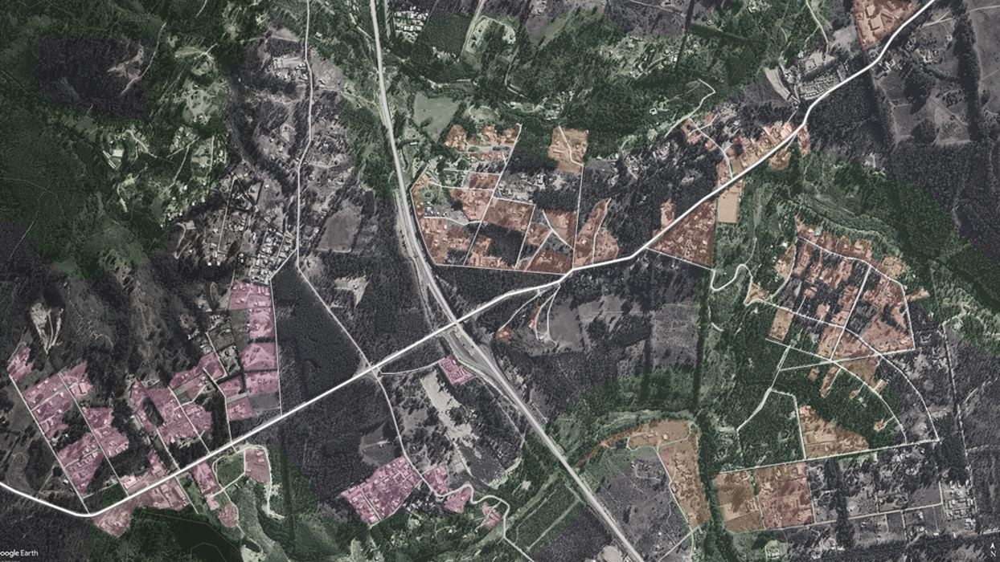
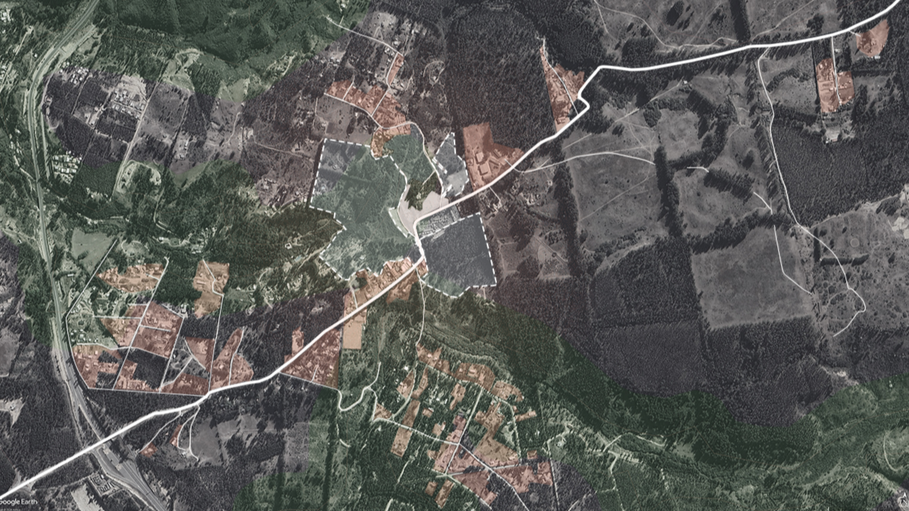
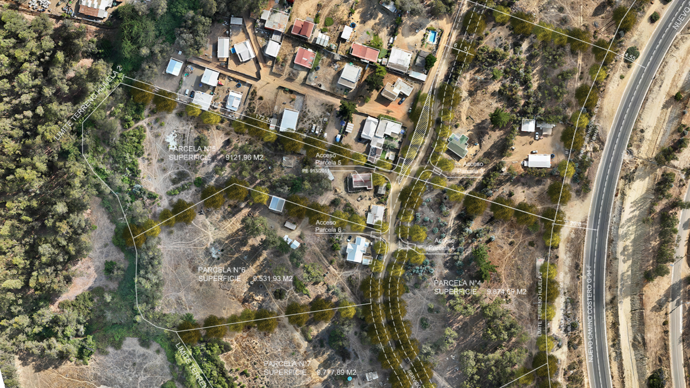

EVALUACIÓN NORMATIVA · FACTIBILIDAD · DESTRABE DE PROYECTOS
Tu proyecto está detenido por normativa

Evaluamos viabilidad. Identificamos rutas posibles. Desbloqueamos proyectos en contextos complejos. Especialista en factibilidad normativa, zonas rurales, subdivisiones y conflictos regulatorios.
Agenda reunión
01 ¿Cuál es tu problema?
Si reconoces alguno de estos escenarios, es probable que necesites evaluación normativa especializada.
Proyecto detenido por observaciones municipalesRecibiste observaciones del DOM y no está claro si es inviable o resoluble.
Incertidumbre sobre viabilidad normativaDistintas opiniones técnicas, sin certeza antes de invertir.
Subdivisión rural o con restriccionesNormativa restrictiva, dudas sobre excepciones y tiempos.
Conflicto con autoridadesRechazo municipal y necesidad de argumentación técnica sólida.
Terreno con múltiples restriccionesSuperposición de normativa y falta de claridad sobre viabilidad.
02 ¿Por qué soy diferente?

No trabajo en diseño arquitectónico. Trabajo en interpretación normativa y viabilidad de proyectos.
- Enfoque técnico: evaluación normativa profunda
- Reducción de riesgo: certeza antes de invertir
- Especialización: zonas rurales y contextos complejos
“No prometo soluciones mágicas. Prometo análisis profundo, estrategia clara y resultados reales.”
03 Servicios
Diseñados para reducir incertidumbre normativa y desbloquear proyectos.
A · Diagnóstico Normativo Integral
Evaluación completa de viabilidad normativa. PRC, OGUC, PREMVAL y más. Resultado: certeza sobre viabilidad.
B · Estrategia de Destrabe
Diseño de rutas para desbloquear proyectos. Resultado: plan claro de acción.
C · Gestión Institucional
Coordinación con DOM, SECPLA, SEREMI. Resultado: avance sin sorpresas.
04 Nuestro Proceso
Transparente, paso a paso y orientado a resultados. Aquí está exactamente cómo trabajamos.
01 · Levantamiento Normativo
Reunión inicial, recopilación de documentación e identificación de instrumentos normativos aplicables mediante diagnóstico.
02 · Análisis de Restricciones
Análisis exhaustivo de cada instrumento. Identificación de conflictos, restricciones y excepciones.
03 · Definición de Estrategia
Presentación de rutas posibles, evaluación de riesgo y recomendación de estrategia óptima.
04 · Gestión Institucional
Coordinación con autoridades, preparación de documentación técnica y seguimiento de expedientes.
05 · Cierre y Documentación
Entrega de permisos, documentación completa y disponibilidad para futuras fases del proyecto.
05 ¿Es para ti?
Este servicio es para ti si:
- Tienes un proyecto detenido o con dudas normativas
- Necesitas certeza sobre viabilidad antes de invertir
- Enfrentas conflicto con autoridades
- Tienes terreno en zona rural o con restricciones
- Valoras precisión técnica sobre promesas vagas
Este servicio NO es para ti si:
- Buscas diseño arquitectónico
- Necesitas solución rápida y barata
- Esperas que se “arregle” normativa inviable
- No estás dispuesto a considerar alternativas
06 Sobre mí
Miguel Meza Buzeta
Arquitecto. Diplomado en BIM (Building Information Modeling), 2019. Universidad de Artes y Ciencias de la Comunicación — UNIACC.
10+ años interpretando normativa compleja. 50+ proyectos desbloqueados. Experiencia en zonas rurales, subdivisiones y conflictos regulatorios. Relación directa con autoridades: Municipalidades, SECPLA, SAG, SEREMI MINVU, MINAGRI.
Especialización: Evaluación normativa (PREMVAL Satélite Borde Costero Sur, PRC, OGUC, leyes especiales). Destrabe de proyectos detenidos. Gestión institucional. Contextos complejos.
08 Casos de Éxito

El Cardonal
Subdivisión predial para desarrollo residencial en zona con restricciones normativas.
Resultado: Subdivisión aprobada.

El Totoral
Análisis de viabilidad para consolidación habitacional en predio con restricciones normativas.
Resultado: Proyecto viable con ruta clara de ejecución.

Huallilemu
Conflicto de interpretación normativa entre SAG, SEREMI MINVU, MINAGRI y DOM.
Resultado: Proyecto desbloqueado.
09 Lo que dicen nuestros clientes
"Encontraron una ruta viable que otros no vieron."
Inversionista
"Evaluación clara. Proyecto aprobado."
Propietaria
"Redujeron incertidumbre normativa significativamente."
Desarrollador